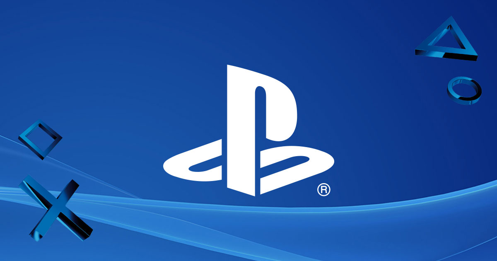

Playstation
De PlayStation 4 (PS4) is een spelcomputer van Sony Interactive Entertainment die in Europa sinds 29 november 2013 verkrijgbaar is. De opvolger van de PlayStation 3 is op 20 februari 2013 aangekondigd te New York tijdens een persconferentie, die volledig in het teken stond van de nieuwe console. De PlayStation 4 maakt deel uit van de achtste generatie in de geschiedenis van de spelcomputer.

Sony doet afstand van de Cell-architectuur, in plaats daarvan heeft het bedrijf gekozen voor de x86-architectuur. Dit is een breed platform dat regelmatig wordt gebruikt in moderne pc's. De reden voor deze keuze is dat het voor ontwikkelaars op deze manier veel makkelijker wordt om spellen te maken. Hierdoor kan een grotere groep ontwikkelaars de stap nemen om PS4-spellen te gaan ontwikkelen, zowel kleine als grote bedrijven. Deze veranderingen zijn tot stand gekomen door de lessen die Sony heeft geleerd tijdens de ontwikkeling, productie en introductie van de PS3. Andere noemenswaardige hardware zijn een snellere blu-rayspeler en 8 GB GDDR5-geheugen.
Wat betreft nieuwe applicaties en services heeft Sony de zogenaamde PlayStation App uitgebracht. Deze app, die gebruikt kan worden op de iPhone, iPad en Android-toestellen, stelt de PS4-gebruiker in staat om hun smartphone of tablet te gebruiken als tweede scherm. Hierdoor krijgen ontwikkelaars de mogelijkheid om de spelervaring nog uitgebreider te maken. Ook zal Gaikai zijn debuut maken op de PlayStation 4. Gaikai is een gamenetwerk dat volledig is gebaseerd op de cloudtechnologie, waardoor de gebruiker spellen en andere content kan streamen via het internet. Door middel van de share-knop op de nieuwe DualShock 4-controller wordt het bijvoorbeeld mogelijk om tijdens het spelen een vriend of vriendin mee te laten kijken met het spel. Sony is tevens van plan om meer nadruk te leggen op het sociale aspect van computerspellen.